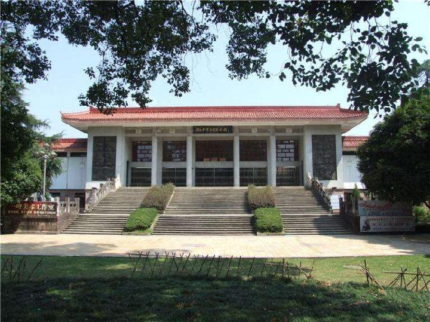

闽北革命历史纪念馆
国家普通级旅游景区
开放时间：8:00~17:00
景点介绍
闽北革命历史纪念馆于1988年建成开馆，总占地面积3293.7平方米，总建筑面积3680.54平方米，原全国政协副主席方毅为该馆题名。1994年4月被共青团福建省委列入青少年革命传统教育基地；1997年10月被列为福建省爱国主义教育基地。
该馆座落在市中心环境优美的列宁公园东部，距离度假区约15公里，是一座仿宋建筑，她座北朝南，掩映在百年古树与松柏之间，展馆分大厅、展厅、书画厅三个部分，陈列200多件珍贵的革命文物和265幅图片，图文并茂、翔实直观，全面展示了在中国共产党领导下，闽北人民经历的大革命浪潮、土地革命硝烟、抗日战争烽火、解放战争炮声的光辉革命历程。
纪念馆周围交通四通八达，十分便利。
地理位置：武夷山市中山路列宁公园内（免费对外开放）